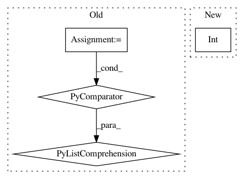

984d17836d7a6240942cd44f2f61c92a427bb9bb,niftynet/layer/crop.py,CropLayer,layer_op,#CropLayer#Any#,25
Before Change
np_kernel = layer_util.trivial_kernel(kernel_shape)
crop_kernel = tf.constant(np_kernel, dtype=inputs.dtype)
// split channel dim
output_tensor = [tf.expand_dims(x, -1)
for x in tf.unstack(inputs, axis=-1)]
output_tensor = [tf.nn.convolution(input=inputs,
filter=crop_kernel,
strides=[1] * spatial_rank,
padding="VALID",
name="conv")
for inputs in output_tensor]
output_tensor = tf.concat(output_tensor, axis=-1)
return output_tensor
After Change
def layer_op(self, inputs):
spatial_rank = layer_util.infer_spatial_rank(inputs)
offsets = [0, *([int(self.border)] * spatial_rank), 0]
out_shape = [-1, *[int(d) - 2 * int(self.border) for d in list(inputs.shape)[1:-1]], -1]
output_tensor = tf.slice(inputs, offsets, out_shape)
return output_tensor
In pattern: SUPERPATTERN
Frequency: 3
Non-data size: 4
Instances
Project Name: NifTK/NiftyNet
Commit Name: 984d17836d7a6240942cd44f2f61c92a427bb9bb
Time: 2018-04-24
Author: z.eaton-rosen@ucl.ac.uk
File Name: niftynet/layer/crop.py
Class Name: CropLayer
Method Name: layer_op
Project Name: NifTK/NiftyNet
Commit Name: 6da0d3cd3b28bb85c2766a90fc205ab80b932eb0
Time: 2017-08-17
Author: wenqi.li@ucl.ac.uk
File Name: niftynet/network/simulator_gan.py
Class Name: ImageGenerator
Method Name: layer_op
Project Name: keras-team/keras
Commit Name: 555ca942df407b8c1bf1d48383c60fa1bf09cc1d
Time: 2019-08-28
Author: francois.chollet@gmail.com
File Name: keras/utils/layer_utils.py
Class Name:
Method Name: count_params